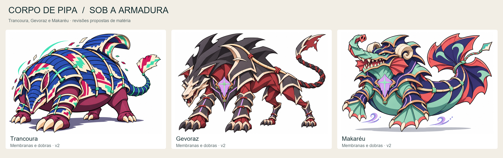
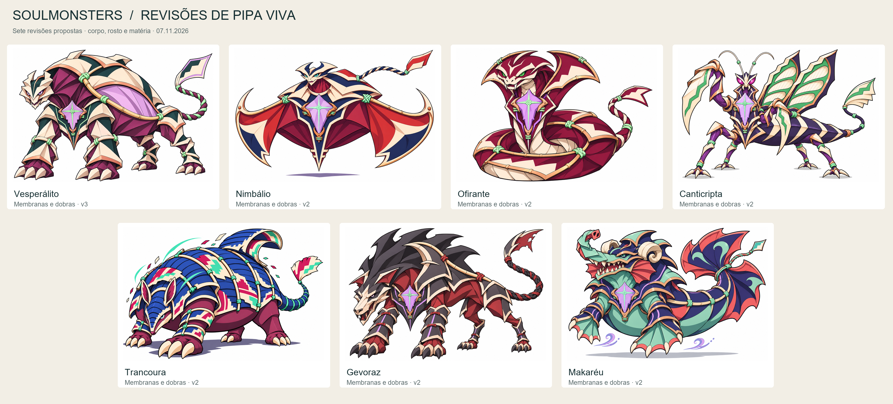

Corpo de pipa, presença adulta.
Sete revisões propostas após aprovação do Grifarca v2. Membranas largas e dobras escolhidas substituem aspecto de músculo retorcido; anatomias, armaduras e cores próprias preservadas.



Vesperálito
Membranas largas no tórax e pescoço, rosto de poucos planos e suporte lateral integrado de vareta.
Brief
Nimbálio
Quilha e ventre de papel inflado, duas velas com recorte gráfico e bordas tensionadas.
Brief
Ofirante
Espiras como volumes tensionados, poucas dobras largas e gola de lâminas de pipa.
Brief
Canticripta
Abdômen liso em grandes segmentos de papel, braços e patas com planos simplificados.
Brief
Trancoura
Ventre e membros de membranas lisas; grevas dianteiras recuperadas por correção dirigida.
Brief
Gevoraz
Removidas estrias orgânicas, com grandes lâminas de papel na crista e planos lisos no corpo.
Brief
Makaréu
Pescoço e ventre de membranas largas, tromba e chifres em poucos planos dobrados.
BriefRevisão e limites · Portadores · Fontes das lendas
Originais preservados. Trancoura não recebeu cristal; segue fora do grupo de portadores. Sem rig, animação ou integração.